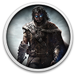

Middle-earth: Shadow of Mordor Game of the Year EditionDetalhes
 |
|
| Tempo de jogo | 2m 0s |
| Última Atividade | 20/10/2022 13:02:58 |
| Adicionado | 07/06/2026 0:35:42 |
| Modificado | 07/06/2026 2:35:22 |
| Status de Conclusão | Jogado |
| Biblioteca | Gog |
| Fonte | GOG |
| Plataforma | PC (Windows) |
| Data de Lançamento | 05/05/2015 |
| Pontuação da Comunidade | 78 |
| Avaliação da crítica | |
| Pontuação do Usuário | |
| Gênero | Adventure Role-playing (RPG) |
| Desenvolvedor | Feral Interactive Monolith Productions |
| Editor | Feral Interactive WB Games |
| Funções | Single Player |
| Links | Community Wiki Wikipedia GOG Xbox |
| Tag | |
Descrição
Middle-earth™: Shadow of Mordor™ Game of the Year Edition includes:
Winner of over 50 “Best of 2014” Awards including Game of the Year, Best Action Game and Most Innovative Game.
You are Talion, a Ranger of the Black Gate, keeping watch over Mordor which has remained undisturbed for ages. In the blink of an eye, everything is taken from you - your friends, your family, and even your own life. Resurrected by a vengeful spirit, you must now embark on a relentless vendetta against those who have wronged you. Fight through Mordor and uncover the truth of the spirit that compels you, discover the origins of the Rings of Power, build your legend and ultimately confront the evil of Sauron in this new chronicle in Middle-earth.
Middle-earth™: Shadow of Mordor™ Season Pass includes:
- Middle-earth™: Shadow of Mordor™
- Middle-earth™: Shadow of Mordor™ Season Pass
Winner of over 50 “Best of 2014” Awards including Game of the Year, Best Action Game and Most Innovative Game.
You are Talion, a Ranger of the Black Gate, keeping watch over Mordor which has remained undisturbed for ages. In the blink of an eye, everything is taken from you - your friends, your family, and even your own life. Resurrected by a vengeful spirit, you must now embark on a relentless vendetta against those who have wronged you. Fight through Mordor and uncover the truth of the spirit that compels you, discover the origins of the Rings of Power, build your legend and ultimately confront the evil of Sauron in this new chronicle in Middle-earth.
- Unleash the Power of the Wraith - Harness the Spirit of vengeance to inflict brutal combos while mastering powerful new skills and weaponry.
- Bend Mordor to Your Will - Exploit the individual fears, weaknesses, and memories of your enemies as you dismantle Sauron's forces from within.
- An Epic Tale of Revenge and Redemption - Become the most feared force in Mordor in a new chronicle set before the events of The Lord of the Rings.
Middle-earth™: Shadow of Mordor™ Season Pass includes:
- Guardians of the Flaming Eye Exclusive Warband Mission: Face Sauron’s elite Defenders before the Black Gate and earn the Wolf's Head rune.
- Lord of the Hunt Story Mission: Dive deeper into Mordor’s living world and hunt the wild beasts of Mordor to earn unique runes.
- The Bright Lord Story Mission: Battle against Sauron as Celebrimbor, the great Elven Lord of the Second Age, to unlock powerful runes and the ability to wield the One Ring.
- Additional Warband Missions, Runes, & Skins: Enhance your weapons with powerful Runes and customize Talion’s appearance with unique skins.
Please note that Middle-earth™: Shadow of Mordor™ does not support certain online features. More details here.